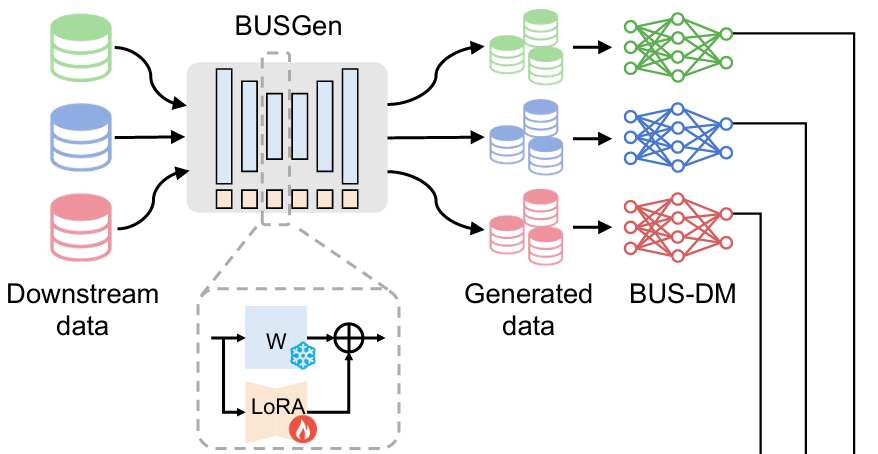
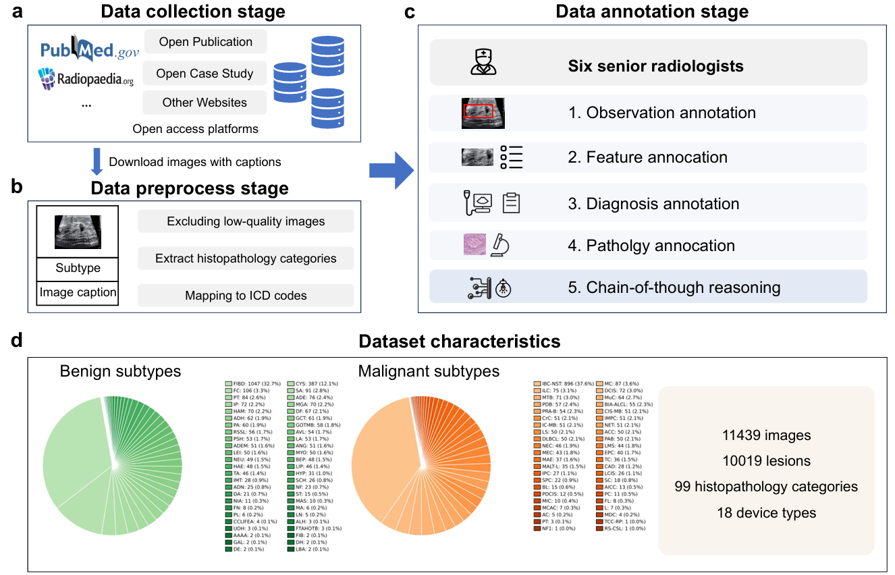
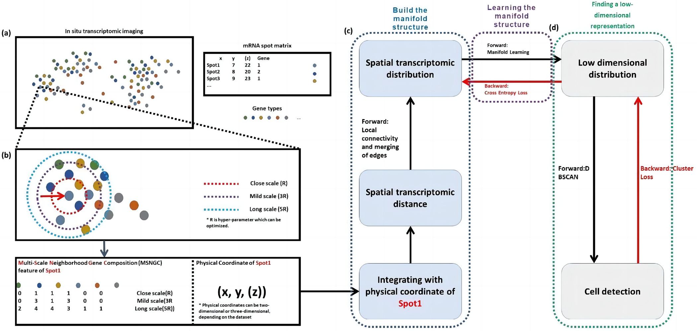
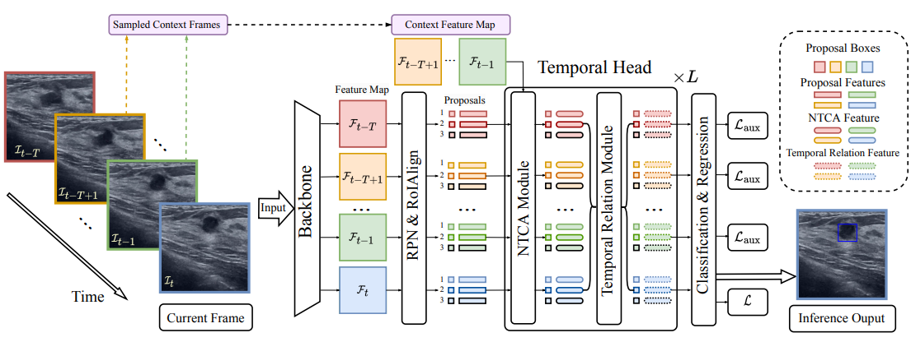
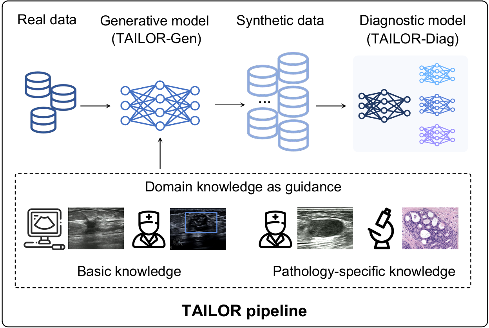

Research
Publications & Projects
Generative models, diagnostic reasoning and medical image analysis.
Publications
Peer-reviewed papers and preprints
MammoExpert: Benchmarking Chain-of-Thought Reasoning in Mammography Diagnosis
A foundation generative model for breast ultrasound image analysis
A Chain-of-thought Reasoning Breast Ultrasound Dataset Covering All Histopathology Categories
Using artificial intelligence system for assisting the classification of breast ultrasound glandular tissue components in dense breast tissue
ST-CellSeg: Cell segmentation for imaging-based spatial transcriptomics using multi-scale manifold learning
Mining Negative Temporal Contexts for False Positive Suppression in Real-Time Ultrasound Lesion Detection
Research Projects
Models, benchmarks and open research

BUSGen: A Foundation Generative Model for Breast Ultrasound
A generative model pretrained on more than 3.5 million breast ultrasound images. Few-shot adaptation produces task-specific synthetic data for downstream screening, diagnosis and prognosis research.

BUS-CoT: Breast Ultrasound Diagnostic Reasoning
A breast ultrasound dataset with 11,439 images, 11,850 lesions and 4,838 patients, covering 99 histopathology categories. Expert annotations connect observations, imaging features, diagnoses and pathology.
MammoExpert: Reasoning in Mammography
A mammography benchmark with 2,379 images and 67 histopathology subtypes. Structured annotations cover observation, assessment and diagnostic synthesis.

ST-CellSeg: Spatial Transcriptomics Cell Segmentation
A cell segmentation method for imaging-based spatial transcriptomics that combines image information with multi-scale manifold learning.

UltraDet: Real-time Ultrasound Lesion Detection
A video-based lesion detection method that uses negative temporal context to suppress false positives in real-time breast ultrasound.

TAILOR: Knowledge-driven AI-generated Data Pipeline
A knowledge-driven pipeline for generating synthetic breast ultrasound data to study diagnosis under long-tailed and rare-case data distributions.